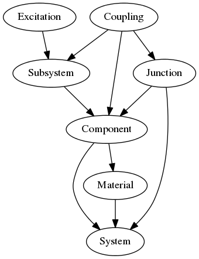

The previous chapter explained what Statistical Energy Analysis is. In this chapter we will have a closer look on how SEA is implemented.
An SEA model in SeaPy is represented by the descendents of the following abstract objects:
as well as the main class representing the model
The following figure gives an overview on how the classes are related.

Components can have multiple subsystems. Depending on the type of component these are added automatically when creating a component. If components are connected to eachother a Junction needs to be created. The Junction will automatically create all possible couplings between the subsystems.